전기산업기사 (2003-05-25 기출문제)
1과목: 전기자기학
1. 그림과 같이 자속밀도 100Wb/m2의 평등자계내에 한번이 10㎝인 점방형회로가 자계방향과 직각인 중심축 둘레로 매분 3600회 회전할 때 이 회로에 유도되는 기전력은 몇 V인가?
- 60πsin(60πt)
- 60πcos(60πt)
- 120πsin(120πt)
- 120πcos(120πt)
(정답률: 51%)
2. 강자성체의 자화의 세기 J와 자화력 H 사이의 관계는?
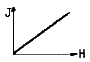
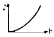
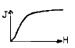
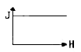
(정답률: 56%)

3. 반지름이 a[m]이고 선간거리가 d[m](d≫a)인 평행전선의 단위길이가당 정전용량은 몇 F/m 인가?
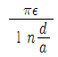
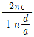
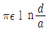
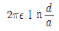
(정답률: 58%)
4. 자계의 세기 1500AT/m되는 점의 자속밀도가 2.8Wb/m2이다. 이 공간의 비투자율은 약 얼마인가?
- 1.86×10-3
- 1.86×10-2
- 1.48×103
- 1.48×102
(정답률: 45%)
5. 무한히 넓은 평면에 면밀도 σ[C/m]의 전하가 분포 되어 있는 경우 전계의 세기는 몇 V/m인가?
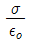
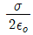
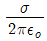
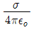
(정답률: 37%)
6. 철심이 든 환상솔레노이드에서 2000AT의 가자력에 의하여 철심내에 4×10-5wb의 자속이 통할 때 이 철심의 자기저항은 몇 AT/Wb 인가?
- 2×107
- 3×107
- 4×107
- 5×107
(정답률: 64%)
7. 반지름 a[m]인 도체구에 전하 Q[C]을 주었을 때, 구중심에서 r[m] 떨어진 구 밖(r ＞a)의 전속밀도 D[C/m2]은?
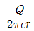
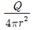
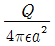
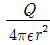
(정답률: 57%)
8. DC전압을 가하면 전류는 도선 중심쪽으로 흐르려고 한다. 이러한 현상을 무슨 효과라 하는가?
- Skin 효과
- Pinch 효과
- 압전기 효과
- Paltie 효과
(정답률: 59%)
9. 공기 중에 0.1×10-6C의 점전하가 있다. 전압 Q에서 거리 a=1m, b=2m에 있는 두 점 a,b사이의 전위치는 몇 V 인가?
- 4.5
- 45
- 450
- 4500
(정답률: 55%)
10. 공간도체 중의 정상 전류밀도를 I, 공간전하밀도를 ρ라고 할 때 키르이호프의 전류법칙을 나타내는 것은?
- i = 0
- div i = 0
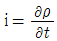
- div

(정답률: 67%)
11. 평면도체 표면에서 d[m]의 거리에 점전하 Q[C]가 있을 때 이 전하를 무한 원까지 운반하는데 요하는 몇J인가?
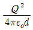
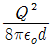
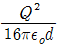
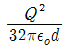
(정답률: 66%)
12. 정전용량 0.03μF의 평행판 공기 콘센서가 있다. 지금 전극판 간격 1/2두께인 유리판을 전극에 평행하게 넓으면 용량은 약 몇 μF 가 되는가? (단, 유리의 비유전률은 10 이다.)
- 0.⑤5
- 0.060
- 0.155
- 0.333
(정답률: 30%)
13. 진공 중에서 폐곡면(閉曲面)을 통하여 나가는 전력선의 총 수는 그 내부에 있는 점전하의 대수 화(代數和)의 몇 배가 되는가?
- εo
- 1/εo
- 0
- 1
(정답률: 47%)
14. 맥스웰 전자방정식의 설명 중 잘못 설명한 것은?
- 폐곡선에 따른 전계의 선적분은 폐곡선내를 통하는 지속의 시간 변화율과 같다.
- 폐곡면을 통해 나오는 자속은 폐곡면내의 자극의 세기와 같다.
- 폐곡면을 통해 나오는 전속은 폐곡선내의 전하량과 같다.
- 폐곡선에 따른 자계의 선적분은 폐곡선내을 통하는 전류와 전속의 시간적 변화율의 화와 같다.
(정답률: 42%)
15. 한번의 길이가 10m 되는 정방형 회로에 100A의 전류가 흐를 때 회로 중심부의 자계의 세기를 몇 A/m 인가?
- 5
- 9
- 6
- 21
(정답률: 43%)
16. 감자율이 0 일 것은?
- 가늘고 짧은 막대 자성체
- 굵고 짧은 막대 자성체
- 가늘고 긴 막대 자성체
- 환상 솔레노이드
(정답률: 74%)
17. 표면전하밀도 ρs ＞0인 도체 표면상의 한 점의 전속밀도가 D=4ax-5ay+2az[C/m2]일 때 ρs 는 몇 C/m2인가?
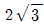
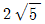
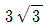
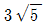
(정답률: 49%)
18. 자극의 세기가 8×10-6wb, 길이가 5cm인 막대자석을 150 AT/m의 평등 자계내에 자계와 30도의 각도로 놓았다면 자석이 받는 회전력은 몇 N-m 인가?
- 1.2×102
- 3×10-5
- 2.4×10-5
- 2×10-7
(정답률: 57%)
19. 다음의 유전체 중에서 비유전률이 가장 큰 것은?
- 물
- 운모
- 수소
- 고무
(정답률: 50%)
20. 중공도체체의 중공부에 전하를 놓지 않으면 외부에서 준 전화는 외부 표면에만 분포한다. 이 때 도체내의 전계는 몇 V/m가 되는가?
- 0
- 4π
- ∞
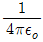
(정답률: 79%)
2과목: 전력공학
21. 퓨즈를 시설하여도 좋은 곳은?
- 온기가 있는 토양에 시설한 대지전압 150V이하인 전동기 철대의 접지선
- 단상3선식 110/220V인 실내 전로의 중성선
- 단상2선식 100V인 실내 전로의 접지측 전선
- 3상4선식 400V인 실내 전로의 접지측 전선
(정답률: 30%)
22. 가공 전선로에서 전선의 단위 길이당 중량과 경간이 일정 할 때 이도는 어떻게 되는가?
- 전선의 장력에 반비례한다.
- 전선의 장력에 비례한다.
- 전선의 장력의 2승에 반비례한다.
- 전선의 장력의 2승에 비례한다.
(정답률: 44%)
23. 가공지선에 대한 설명 중 옳지 않은 것은?
- 가공지선은 일반적으로 아연도금 강연선을 사용한다.
- 가공지선은 뇌해방지를 위하여 1~2조 가선으로 하는 것이 없다.
- 가공지선의 이도는 전선의 이도보다 크게 한다.
- 가공지선은 사고시에 고장전류의 일부분이 흐를 경우가 많다.
(정답률: 48%)
24. 직렬측전기를 선로에 삽입할 때의 현상으로 옳은 것은?
- 장거리 선로의 인덕턴스를 보상하므로 전압강하가 많아진다.
- 부하의 역률이 나쁜 선로일수록효과가 좋다.
- 수전단의 전압변동율을 증가시킨다.
- 인태안정도가 감소하여도 최대송전전력이 커진다.
(정답률: 48%)
25. 중선점접지방식 중 단선고장일 때 선로의 전압상승이 최대이고, 통신장해가 최소인 것은?
- 비접지방식
- 직접접지방식
- 저항접지방식
- 소호리액터접지방식
(정답률: 49%)
26. 원자로의 감속재로 사용하기에 적당치 않은 것은?
- 증수
- 경수
- 흑연
- 납
(정답률: 66%)
27. 진상전류만이 아니라 지상전류도 잡아서 광범위하게 연속적인 전압조정을 할 수 있는 것은?
- 전력용콘덴서
- 동기조상기
- 분로리액터
- 직렬리액터
(정답률: 52%)
28. 지중전선로만 전력케이블의 고장을 검출하는 방법으로 머리(Murray)루프법이 있다. 이 방법을 사용하괴 교류전압, 수호기를 접속시켜 찾을 수 있는 고장은?
- 1선 지락
- 2선 단락
- 3선 단락
- 1선 단선
(정답률: 29%)
29. 정격전압 7.2kV, 정격차단용량 250MVA인 3상용 차단기의 정격차단전류는 약 몇 kA 정도인가?
- 10
- 20
- 30
- 40
(정답률: 54%)
30. 페란티(Ferranti)현상이 발생하는 원인은?
- 선로의 저항
- 선로의 인덕턴스
- 선로의 정전용량
- 선로의 누설콘덕턴스
(정답률: 69%)
31. 전력서난송 보호계전방식의 장점이 아닌 것은?
- 장치가 간단하고, 고장이 없으며, 계전기의 성능저하가 없다.
- 고장의 선택성이 우수하다.
- 동작이 예민하다.
- 고장점이나 계통의 여하에 불구하고 선택차단개소를 동시에 고속도 차단할 수 있다.
(정답률: 37%)
32. 3상의 전원에 접속된 3각형 결선의 콘덴서를 성형결선으로 바꾸면 진상용량은 몇 배인가?
- 3
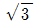
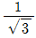
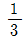
(정답률: 44%)
33. 변전소에서 수용가에 공급되는 전력을 끊고 소내기기를 점검할 필요가 있을 경우와 끝난 후 차단기와 단로기를 개폐시키는 동작을 설명한 것으로 옳은 것은?
- 접검시에는 차단기로 부하회로를 끊고 단로기를 열어야 하며, 점검후에는 차단기로 부하회로를 연결한 후 단로기를 넣어야 한다.
- 점검시에는 단로기를 열고 난 후 차단기를 열어야하며, 점검후에는 단로기를 넣고, 다음에 차단기로 부하회로를 연결하여야 한다.
- 점검시에는 단로기를 열고 난 후 차단기를 열어야 하며 점검이 끝난 경우에는 차단기를 부하에 연결한 다음 단로기를 넣어야 한다.
- 점검시에는 차단기로 부하회로를 끊고 난 다음에 단로기를 열어야 하며, 점검후에는 단로기를 넣은 후 차단기를 넣어야 한다.
(정답률: 54%)
34. 62000kW의 전력을 60km 떨어진 지점에서 송전하려면 전압은 몇 kV로 하면 좋은가?
- 66
- 110
- 140
- 154
(정답률: 49%)
35. SF6가스차단기의 설명이 잘못된 것은?
- SF6가스는 절연내력이 공기의 2~3배이고 소호능력이 공기의 100~200배이다.
- 밀폐구조이므로 소용이 없다.
- 근거리 고장 등 가혹한 재기전압에 대하서 우수하다.
- 아크에 의해 SF6가스는 분해되어 유독가스를 발생시킨다.
(정답률: 77%)
36. 소도체의 반지름 r[m], 소도체간의 선간거리가 d[m]인 2개의 소도체를 사용한 345kV 송전선로가 있다. 복도체의 등가 반지름은?
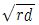
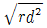
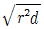
- rd
(정답률: 50%)
37. 전선의 중량은 전압×역률과 어떠한 관계에 있는가?
- 비례
- 반비례
- 지승에 비례
- 자승에 반비례
(정답률: 38%)
38. 3상 1회선과 대지가느이 단위길이당 충전전류가 0.25A/km일 때 길이가 18km인 선로의 충전전류는 몇 A인가?
- 1.5
- 4.5
- 12.5
- 40.5
(정답률: 51%)
39. 전력용 퓨즈(power fuse)는 주로 어떤 전류의 차단을 목적으로 사용하는가?
- 단락전류
- 과부하전류
- 충전전류
- 과도전류
(정답률: 73%)
40. 수조에 대한 설명으로 옳은 것은?
- 무압수로의 종단에 있으면 조압수조, 압력수로의 종단에 있으면 헤드탱크라 한다.
- 헤드탱크의 용량은 최대사용수량의 1~2시간에 상당하는 크기로 설계된다.
- 조압수조는 부하변동에 의하여 생긴 압력터널내의 수격압이 압력터널에 침입하는 것을 방지한다.
- 헤드탱크는 수차의 부하가 급증할 때에는 물을 배제하는 기능을 가지고 있다.
(정답률: 49%)
3과목: 전기기기
41. 3[KVA], 3000/100[V]의 단상 변압기를 승압기로 연결하고 1차측에 3000[V]를 가했을 때 그 부하용량[KVA]은?(오류 신고가 접수된 문제입니다. 반드시 정답과 해설을 확인하시기 바랍니다.)
- 76
- 85
- 93
- 94
(정답률: 50%)
42. 변압기의 병렬 운전에 있어서 각 변압기가 그용량에 비례해서 전류를 분당하고, 변압기 상호간에 순환전류가 흐르지 않도록 하기 위해서는 다음의 조건을 만족하여야 한다 그중에서 합당하지 못한 것은?
- 권수비가 같을 것
- 각 변압기의 1차, 2차의 정격전압 및 극성이 같을 것
- %저항강하 및 %리액턴스 강하가 각 변압기의 용량에 반비례할 것
- 3상식에서는 상회전 방향 및 위상변위가 같을 것
(정답률: 47%)
43. 변압기 1차측에는 몇 개의 탭이 있다. 그 이유는?
- 변압기의 여자전류를 조정하기 위하여
- 부하 전류를 조정하기 위하여
- 수전점의 전압을 조정하기 위하여
- 예비용 단자
(정답률: 53%)
44. 회전수 N[rmp]으로, 단자전압이 Et[V]일 때, 정격부하에서 I a[A]의 전기자 전류가 흐르는 직류 분권전동기의 전기자 전항이 Ra[Ω]이라고 한다. 이 전동기를 같은 전압으로 무부하 운전할 때 그 속도 N’[rmp]는? (단, 그 전기자 반작용 및 자기포화 현상등은 일체 무시한다.)
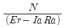
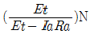
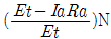
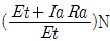
(정답률: 35%)
45. 2[KVA], 3000/100[V]인 단상 변압기의 철손이 200[w]이면 1차에 환산한 여자 콘덕턴스[℧]는?
- 약 22.2×10-6
- 약 0.067
- 약 0.073
- 약 0.090
(정답률: 31%)
46. 권선형 유도 전동기의 회전자 권선의 접속을 핵심력 개폐기에 의해서 직렬 또는 병렬로 바꿔어 속도를 제어하는 방법은?
- 게르게스법
- 2차 여자법
- 2차 저항법
- 주파수 변화법
(정답률: 48%)
47. 200[V], 3상 유도전동기의 전부하 슬립이 6[%]이다. 공급전압이 10[%]저하된 경우의 전부하 슬립은 어떻게 되는가?
- 0.074
- 0.067
- 0.064
- 0.049
(정답률: 20%)
48. 3상 유도 전동기의 원선도를 그리는데 필요하지 않은 시험은?
- 슬립측정
- 구속시험
- 무부하 시험
- 저항측정
(정답률: 63%)
49. 직류기의 효율이 최대가 되는 경우는?
- 와류손 = 히스테리시스손
- 기계손 = 전기자동손
- 전부하동손 = 철손
- 고정손 = 부하손
(정답률: 54%)
50. 브러시의 위치를 바꾸어서 회전방향을 바꿀 수 있는 전기기계가 아닌 것은?
- 틈슨형 반발 전동기
- 3상 직원 정류자 전동기
- 시라게 전동기
- 정류지형 주파수 변환기
(정답률: 37%)
51. 3상 동기전동기에 있어서 제동권선의 역할은?
- 효율을 좋게
- 역율을 개선
- 난조를 방지
- 출력을 증가
(정답률: 68%)
52. 3300/210[V], 5[KVA]단상변압기의 퍼센트 저항 강하 2.4[%], 리액턴스 강하 1.8[%]이다. 임피던스 와트[W]는?
- 320
- 240
- 120
- 90
(정답률: 36%)
53. 4극 전기자 권선이 단중중권인 직류발전기의 전기자 전류가 20[A]이면 각 전기자 권선의 병렬회로에 흐르는 전류는?
- 10[A]
- 8[A]
- 5[A]
- 2[A]
(정답률: 59%)
54. 동기기의 안정도 항상에 유효하지 못한 것은?
- 관성모우먼트를 크게 할 것
- 단락비를 크게 할 것
- 속응여자 방식으로 할 것
- 동기 임피던스를 크게 할 것
(정답률: 60%)
55. 3300/210[V], 5[KVA]의 단상 주상 변압기를 승압용단권 변압기로 접속하고, 1차에 3000[V]를 가할때의 출력[KVA]은?
- 약 69
- 약 76
- 약 82
- 약 84
(정답률: 27%)
56. 60[Hz], 12극, 회전자의 외경 2[m]인 동기발전기에 있어서 회전자의 주변속도는?
- 43[m/s]
- 62.8[m/s]
- 120[m/s]
- 132[m/s]
(정답률: 59%)
57. 직류 분권발전기의 전기자 권선을 단중중권으로 감으면?
- 병렬 회로수는 항상 2 이다.
- 높은 전압 적은 전류에 적당하다.
- 균압선이 필요없다.
- 브러시 수는 극수와 같아야 한다.
(정답률: 48%)
58. 2대의 동기발전기가 병렬운전하고 있을 때 동기화 전류가 흐르는 경우는?
- 기전력의 크기에 차가 있을 때
- 기전력의 위상에 차가 있을 때
- 부하분당에 차가 있을 때
- 기전력의 파형에 차가 있을 때
(정답률: 59%)
59. 권선형 유도 전동기에서 비례추이를 할 수 없는 것은?
- 회전력
- 1차 전류
- 2차 전류
- 출력
(정답률: 55%)
60. 단상 유도전동기으 기동방법중 가장 기동토크가 작은 것은?
- 반발 기동형
- 반발 유도형
- 콘덴서 분상형
- 분상 기동형
(정답률: 52%)
4과목: 회로이론
61. 어떤 제어계의 임펄스 응답이 sin t 일 때에 이 계의 전달함수를 구하면?
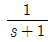
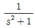
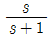
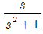
(정답률: 57%)
62. 그림과 같은 회로에 대한 설명으로 잘못된 것은?
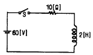
- 이 회로에 시정수는 0.2[S]이다.
- 이 회로의 정상전류는 6[A]이다.
- 이 회로의 특성근은 -5이다.
- t=0에서 직류전압 60[V]를 제거할 때 t=0.4[S]시각의 회로의 전류는 5.26[A]이다.
(정답률: 49%)
63. 주기적인 주형파의 산호는 그 주파수 성분이 어떻게 되는가?
- 무수히 많은 주파수의 성분을 갖는다.
- 주파수 성분을 갖지 않는다.
- 직류분만으로 구성된다.
- 교류합성을 갖지 않는다.
(정답률: 70%)
64. 비정현파 기전력 및 직류의 값이
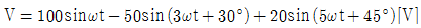
,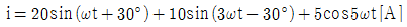
이라면 전력[W]은?- 763.2
- 776.4
- 785.8
- 795.6
(정답률: 39%)
65. 키르히호프 전압법칙 설명 중 잘못 된 것은?
- 회로소자의 선형, 비선형에 관계없이 적용된다.
- 집중 정수회로에 적용된다.
- 선형 소자만이 이루어진 회로에 적용된다.
- 회로소자의 시변, 시불변성에 관계없이 적용된다.
(정답률: 45%)
66. 대칭 3상 Y형 부하에서 1상당의 부하 임피던스가 Z=16+j12[Ω] 이다. 부하전류가 10[A]일대 이 부하의 선간 전압[V]은?
- 200
- 245
- 346
- 375
(정답률: 50%)
67. R-L-C 직렬회로에서 일정 각 주파수의 전압을 가하여 R만을 변화시켰을 때 R의 어떤 값에서 소비전력이 최대가 되는가?
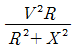
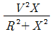
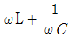
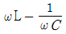
(정답률: 22%)
68. 다음 3단자망의 4단자 정수 중 C 점수는?
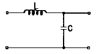
- 1
- jωL
- jωC
- 1+j(ωL+ωC)
(정답률: 56%)
69. R[Ω]의 저항 3개를 Y로 접속하고 이것을 200[V]의 평형 3상 교류 전원에 연결할 때 선전류가 20[A]가 흘렀다. 이 3개의 저항을 △로 접속하고 동일전원에 연결하였을 때의 선전류[A]는?
- 약 30
- 약 40
- 약 50
- 약 60
(정답률: 56%)
70. 3상 회로에 있어서 대칭분 전압이
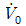
= 8 + j3[V],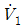
= 6 - j8[V], = 8 + j12[V] 일 때 a상의 전압[V]는?(오류 신고가 접수된 문제입니다. 반드시 정답과 해설을 확인하시기 바랍니다.)- 6+j7
- 8+j6
- 3+j12
- 6+j12
(정답률: 48%)
71. 대칭 3상 교류에서 순시값의 백터 합은?
- 0
- 40
- 0.577
- 86.6
(정답률: 64%)
72. εat sin ωt 의 라플라스 변환은?
(정답률: 41%)
73. 그림과 같은 R과 C의 병렬회로에서 주파수가 일정 하고 C가 0에서 ∞까지 변할 때 합성 임피던스 Z의 궤적은 어떻게 되는가?
- 원점을 지나는 반직선이다.
- 원점을 지나지 않고 실수축에 평행인 반직선이다.
- 원점을 지나는 반원이다.
- 원점을 지나지 않는 반원이다.
(정답률: 60%)
74. 그림과 같은 회로에서 단자 ab 사이의 합성 저항은?
- r
- 3r
(정답률: 67%)
75. L-C 직렬회로에 직류 기전력 E를 t=0에서 갑자기 인가할 때 C에 걸리는 최대 전압은?
- E
- 1.5E
- 2E
- 2.5E
(정답률: 37%)
76. 다음과 같은 회로의 영상임피던스 Z01과 Z02는 각각 몇 [Ω]인가?
- 9,5
- 4,5
(정답률: 41%)
77. 314[[mH]의 자기 인덕턴스에 120[V], 60[Hz]의 교류전압을 가하였을 때 흐르는 전류[A]는?
- 10
- 8
- 1
- 0.5
(정답률: 50%)
78. 용량 30[KVA]의 단상 변압기 2대를 V결선하여 역률 0.6, 전력 20[kW]의 평형 3상부하에 전력을 공급할 때 변압기 1대가 분당하는 피상 전력[KVA]은 얼마인가?(오류 신고가 접수된 문제입니다. 반드시 정답과 해설을 확인하시기 바랍니다.)
- 14.4
- 15
- 20
- 30
(정답률: 22%)
79. 일 때 f(t)의 최종값은?
- 2
- 3
- 5
- 15
(정답률: 64%)
80. 대칭 n상에서 선전류와 환상전류 사이에 위상차는?
(정답률: 65%)
5과목: 전기설비기술기준 및 판단 기준
81. 상용되는 전선이 반드시 절연전선이 아니라도 되는 배선 공사는?
- 합성수지관공사
- 금속관공사
- 버스덕트공사
- 플로어덕트공사
(정답률: 34%)
82. 폭연성 분진이 많은 장소의 저압 옥내배선에 적합한 배선 공사방법은?
- 금속관공사
- 애자사용공사
- 합성수지관공사
- 캡타이어케이블공사
(정답률: 61%)
83. 농촌지역에서 고압 가공전선로에 접속되는 배전용 변압기를 시설하는 경우, 지표상의 높이는 몇 m 이상이어야 하는가?
- 3.5
- 4
- 4.5
- 5
(정답률: 20%)
84. 지중전선로 사용되는 전선은?
- 절연전선
- 동북강선
- 케이블
- 나경동선
(정답률: 67%)
85. 특별고압 가공전선로에 사용하는 철탑 중에서 전선로의 지지물 양쪽의 경간의 차가 큰 곳에 사용하는 것은?
- 각도형
- 인류형
- 보강형
- 내장형
(정답률: 68%)
86. 239kV 가공전선로의 다중접지를 한 중성선은 어느 공사의 규정에 준하여 시설하는가? (단, 중성선 다중접지식의 것으로서 전로에 지기가 생겼을 때에 2초이내에 자동적으로 이를 전로로부터 차단하는 장치가 되어 있다고 한다.)
- 가공공동시선
- 저압가공전선
- 고압가공전선
- 특별고압가공전선
(정답률: 23%)
87. 지중전손로에서 관, 암거, 기타 지중전선을 넣은 방호장치의 금속제 부분 또는 지중저선의 금속체 피복의 접지는 제 몇 종 접지공사를 하여야 하는가? (단, 방호장치의 금속제 부분에는 케이블을 지지하는 금구류을 제외한다.)
- 제 1종
- 제 2종
- 제 3종
- 특별 제 3종
(정답률: 50%)
88. 애자사용공사에 의한 저압 옥내배선을 시설할 때 사용 전압이 400V를 넘는 경우 전선과 조명재와의 이격 거리는 최소 몇 cm이상이어야 하는가?
- 2.5
- 5
- 7.5
- 10
(정답률: 39%)
89. 옥내에 시설하는 저압전선으로 나전선을 절대로 사용할 수 없는 경우는?
- 금속덕트공사에 의하여 시설하는 경우
- 버스덕트공사에 의하여 시설하는 경우
- 애자사용공사에 의하여 전개관 곳에 전기로용 전선을 시설하는 경우
- 라이팅덕트공사에 의하여 시설하는 경우
(정답률: 49%)
90. 고압용 기계기구를 시간차에 시설할 때 지표상 몇m이상의 높이에 시설하고, 또한 사람이 쉬게 접촉할 우려가 없도록 하여야 하는가?
- 4
- 4.5
- 5
- 5.5
(정답률: 29%)
91. 옥내 저압용의 전구선율 시설하려고 한다. 사용 전압이 몇 V 이상인 전구선은 옥내 시설할 수 없는가?
- 250
- 300
- 350
- 400
(정답률: 33%)
92. 사용전압이 400V미만인 경우의 저압 보안공사에 전선으로 경동선을 사용할 경우 몇 mm 의 것을 사용하여야 하는가?
- 1.2
- 2.6
- 3.5
- 4
(정답률: 26%)
93. 송유풍냉식 특별고압용 변압기의 송풍기가 고장이 생길 경우를 대비하기 위한 장치는?
- 경보장치
- 자동차단장치
- 압축공기장치
- 속도조정장치
(정답률: 60%)
94. 선로의 길이가 10km가 넘는 154kV 가공전선로에 시설하는 전력보안통신용 전화설비 중 적어도 1회선에는 시설되어야 하는 것은?
- 이동통신설비
- OW전선을 사용한 참가전화설비
- 악전선 반송전화설비
- 전력선 반송전화설비
(정답률: 34%)
95. 고압전로와 비접지식 저압전로를 결합하는 변압기로 고압 권선과 저압권선간에 있는 금속제의 흔촉방지판에 제 2종 접지공사를 한 것에 접속하는 저압전선을 옥외에 시설할 때 잘못된 것은?
- 저압 옥상전선로의 전선으로 절연전선을 사용하였다.
- 저압 저선은 1구내에만 시설하였다.
- 저압 가공전선로의 전선은 케이블을 사용하였다.
- 저압 가공전선과 고압가공전선은 별개의 지지물에 시설하였다.
(정답률: 16%)
96. 특별고압 가공전선로를 시가지에 시설하는 경우, 지지물로 사용할 수 없는 것은?
- 목주
- 철탑
- 철그콘크리트주
- 철주
(정답률: 64%)
97. 교류 전차선 등과 식물과의 이격거리는 몇 m 이상이어야 하는가?
- 1
- 1.5
- 2
- 2.5
(정답률: 49%)
98. 유도장해를 방지하기 위하여 사용전압 60000V이하인 가공 전선로의 유도전류는 전화선로의 유도전류는 전화선로의 길이 12km마다 몇 μ A를 넘지 않도록 하여야 하는가?
- 2
- 3
- 5
- 6
(정답률: 47%)
99. 방전등용 안정기로부터 방전관까지의 전로를 무엇이라고 하는가?
- 소세력회로
- 관등회로
- 급전선로
- 악전류전선로
(정답률: 64%)
100. 발전기를 구동하는 수차의 압유장치의 유압이 현저히 저하한 경우 자동적으로 이를 전로로부터 차단하는 장치를 하여야 한다. 용량 몇 kVA 이상인 발전기에 반드시 자동차단장치를 시설하여야 하여야 한다. 용량KVA 이상인 발전기에 반드시 자동차단장치를 시설하여야 하는가?
- 500
- 1000
- 1500
- 2000
(정답률: 19%)